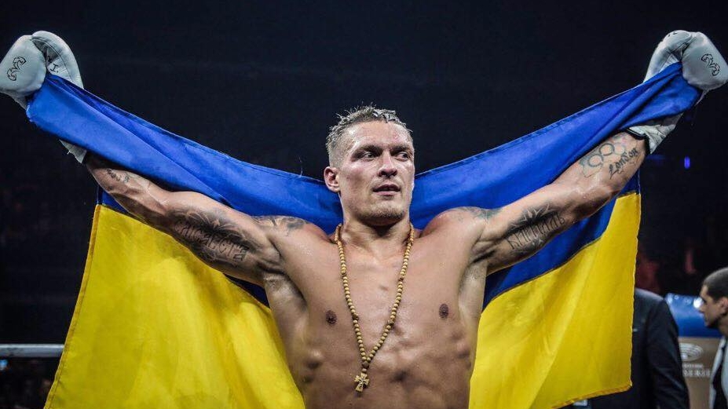

Олександр Усик народився у Сімферополі. У дитинстві займався футболом, а до боксу прийшов пізніше, у віці близько 15 років. Став одним із найтитулованіших українських спортсменів, чемпіоном світу та Олімпійських ігор.
| Рік | Подія |
|---|---|
| 2011 | Чемпіон світу серед аматорів |
| 2012 | Олімпійський чемпіон у Лондоні |
| 2013 | Дебют у професійному боксі |
| 2018 | Абсолютний чемпіон світу в першій важкій вазі |
| 2021 | Перемога над Ентоні Джошуа, чемпіонські пояси у важкій вазі |
| 2024 | Перемога над Тайсоном Ф'юрі, статус абсолютного чемпіона у важкій вазі |
Більше фото дивіться на сторінці Галерея.